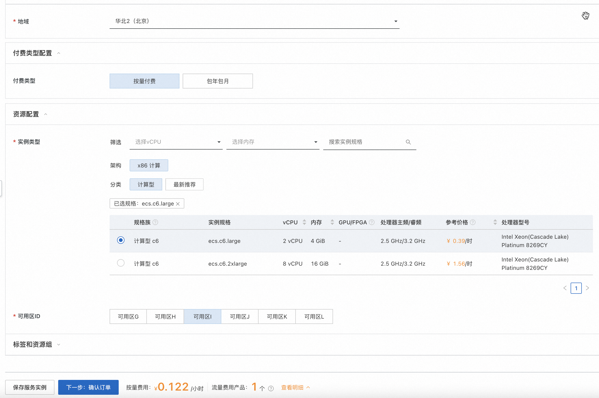
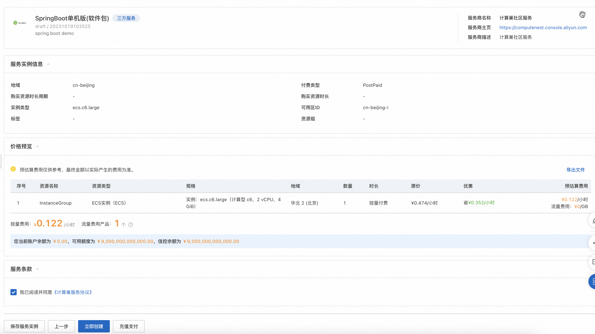
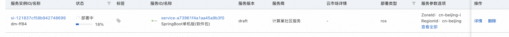

服务模板说明文档
服务说明
本文介绍基于SpringBoot+软件包的单机ecs服务快速上手流程，本示例对应的Git仓库地址：springboot-ecs-package-demo。
本示例会自动的构建计算巢服务，具体的服务构建流程为： 1. 上传文件并构建计算巢文件部署物。 2. 创建计算巢服务并关联文件部署物。
创建过程大约持续1分钟，当服务变成待提交后构建成功。
服务架构
本部署架构为单机ecs部署，通过公网ip 8080端口访问。

服务构建计费说明
测试本服务构建无需任何费用，创建服务实例涉及的费用参考服务实例计费说明。
RAM账号所需权限
本服务需要对ECS、VPC等资源进行访问和创建操作，若您使用RAM用户创建服务实例，需要在创建服务实例前，对使用的RAM用户的账号添加相应资源的权限。添加RAM权限的详细操作，请参见为RAM用户授权。 所需权限如下表所示：
| 权限策略名称 | 备注 |
|---|---|
| AliyunECSFullAccess | 管理云服务器服务（ECS）的权限 |
| AliyunVPCFullAccess | 管理专有网络（VPC）的权限 |
| AliyunROSFullAccess | 管理资源编排服务（ROS）的权限 |
| AliyunComputeNestUserFullAccess | 管理计算巢服务（ComputeNest）的用户侧权限 |
| AliyunComputeNestSupplierFullAccess | 管理计算巢服务（ComputeNest）的服务商侧权限 |
服务实例计费说明
测试本服务在计算巢上的费用主要涉及：
- 所选vCPU与内存规格
- 系统盘类型及容量
- 公网带宽
计费方式包括：
- 按量付费（小时）
- 包年包月
目前提供如下实例：
| 规格族 | vCPU与内存 | 系统盘 | 公网带宽 |
|---|---|---|---|
| ecs.c6.large | 内存型c6，2vCPU 4GiB | ESSD云盘 200GiB PL0 | 固定带宽1Mbps |
| ecs.c6.2large | 内存型c6，4vCPU 8GiB | ESSD云盘 200GiB PL0 | 固定带宽1Mbps |
预估费用在创建实例时可实时看到。
服务实例部署流程
部署参数说明
| 参数组 | 参数项 | 说明 |
|---|---|---|
| 服务实例 | 服务实例名称 | 长度不超过64个字符，必须以英文字母开头，可包含数字、英文字母、短划线（-）和下划线（_）。 |
| 地域 | 服务实例部署的地域。 | |
| 付费类型 | 资源的计费类型：按量付费和包年包月。 | |
| ECS实例配置 | 实例类型 | 可用区下可以使用的实例规格。 |
| 实例密码 | 长度8-30，必须包含三项（大写字母、小写字母、数字、 ()`~!@#$%^&*-+=|{}[]:;'<>,.?/ 中的特殊符号）。 | |
| 网络配置 | 可用区 | ECS实例所在可用区。 |
部署步骤
- 部署链接

- 单击部署链接，进入服务实例部署界面，根据界面提示，填写参数完成部署。 
- 参数填写完成后可以看到对应询价明细，确认参数后点击下一步：确认订单。 
-
确认订单完成后同意服务协议并点击立即创建 进入部署阶段。
 4. 等待部署完成后就可以开始使用服务，进入服务实例详情点击visitUrl。 5. 部署结果

服务详细说明
本文通过将代码构建后，将deploy.sh和application.jar打包成package.tgz，通过计算巢部署物上传为文件部署物，并分发生成SpringBootPackage，然后在模板中ALIYUN::ECS::RunCommand执行命令。
yum install -y java
mkdir -p /home/admin/application
cd /home/admin/application
wget '{{ computenest::file::springboot }}' -O package.tgz
tar xvf package.tgz
/bin/bash deploy.sh start
{{ computenest::file::springboot }} 为占位符，会由计算巢服务替换成文件部署物SpringBootPackage的http下载地址。
templates/template.yaml主要由以下三部分组成：
- Parameters定义需要用户填写的参数，包括付费类型，实例规格和实例密码可用区参数。
PayType:
Type: String
Label:
en: ECS Instance Charge Type
zh-cn: 付费类型
Default: PostPaid
AllowedValues:
- PostPaid
- PrePaid
AssociationProperty: ChargeType
AssociationPropertyMetadata:
LocaleKey: InstanceChargeType
PayPeriodUnit:
Type: String
Label:
en: Pay Period Unit
zh-cn: 购买资源时长周期
Default: Month
AllowedValues:
- Month
- Year
AssociationProperty: PayPeriodUnit
AssociationPropertyMetadata:
Visible:
Condition:
Fn::Not:
Fn::Equals:
- ${PayType}
- PostPaid
PayPeriod:
Type: Number
Label:
en: Period
zh-cn: 购买资源时长
Default: 1
AllowedValues:
- 1
- 2
- 3
- 4
- 5
- 6
- 7
- 8
- 9
AssociationProperty: PayPeriod
AssociationPropertyMetadata:
Visible:
Condition:
Fn::Not:
Fn::Equals:
- ${PayType}
- PostPaid
EcsInstanceType:
Type: String
Label:
en: Instance Type
zh-cn: 实例类型
AssociationProperty: ALIYUN::ECS::Instance::InstanceType
AssociationPropertyMetadata:
InstanceChargeType: ${PayType}
AllowedValues:
- ecs.c6.large
- ecs.c6.2xlarge
InstancePassword:
NoEcho: true
Type: String
Description:
en: Server login password, Length 8-30, must contain three(Capital letters, lowercase letters, numbers, ()`~!@#$%^&*_-+=|{}[]:;'<>,.?/ Special symbol in)
zh-cn: 服务器登录密码,长度8-30，必须包含三项（大写字母、小写字母、数字、 ()`~!@#$%^&*_-+=|{}[]:;'<>,.?/ 中的特殊符号）
AllowedPattern: '^[a-zA-Z0-9-\(\)\`\~\!\@\#\$\%\^\&\*\_\-\+\=\|\{\}\[\]\:\;\<\>\,\.\?\/]*$'
Label:
en: Instance Password
zh-cn: 实例密码
ConstraintDescription:
en: Length 8-30, must contain three(Capital letters, lowercase letters, numbers, ()`~!@#$%^&*_-+=|{}[]:;'<>,.?/ Special symbol in)
zh-cn: 长度8-30，必须包含三项（大写字母、小写字母、数字、 ()`~!@#$%^&*_-+=|{}[]:;'<>,.?/ 中的特殊符号）
MinLength: 8
MaxLength: 30
AssociationProperty: ALIYUN::ECS::Instance::Password
ZoneId:
Type: String
Label:
en: Zone ID
zh-cn: 可用区ID
AssociationProperty: ALIYUN::ECS::Instance::ZoneId
- Resources定义需要开的资源，包括新开的vpc, vswitch和ecs实例, 以及执行命令的定义。
Vpc:
Type: ALIYUN::ECS::VPC
Properties:
CidrBlock: 192.168.0.0/16
SecurityGroup:
Type: ALIYUN::ECS::SecurityGroup
Properties:
SecurityGroupName:
Ref: ALIYUN::StackName
VpcId:
Ref: Vpc
# 安全组入端口
SecurityGroupIngress:
- PortRange: 8080/8080
Priority: 1
SourceCidrIp: 0.0.0.0/0
IpProtocol: tcp
NicType: internet
VSwitch:
Type: ALIYUN::ECS::VSwitch
Properties:
ZoneId:
Ref: ZoneId
VpcId:
Ref: Vpc
CidrBlock: 192.168.0.0/24
InstanceGroup:
Type: ALIYUN::ECS::InstanceGroup
Properties:
# 付费类型
InstanceChargeType:
Ref: PayType
PeriodUnit:
Ref: PayPeriodUnit
Period:
Ref: PayPeriod
VpcId:
Ref: Vpc
VSwitchId:
Ref: VSwitch
SecurityGroupId:
Ref: SecurityGroup
ZoneId:
Ref: ZoneId
ImageId: springboot
Password:
Ref: InstancePassword
InstanceType:
Ref: EcsInstanceType
SystemDiskCategory: cloud_essd
SystemDiskSize: 200
InternetMaxBandwidthOut: 1
IoOptimized: optimized
MaxAmount: 1
InstallPackage:
Type: ALIYUN::ECS::RunCommand
Properties:
InstanceIds:
Fn::GetAtt:
- InstanceGroup
- InstanceIds
Type: RunShellScript
Sync: true
Timeout: 3600
CommandContent:
Fn::Sub:
- |
#!/bin/bash
cd /home/admin/application
/bin/bash deploy.sh start
- AccountId:
Ref: ALIYUN::TenantId
- Outputs定义需要最终在计算巢概览页中对用户展示的输出
Outputs:
VisitUrl:
Description:
en: VisitUrl.
zh-cn: 访问页面。
Value:
Fn::Sub:
- http://${Address}:8080
- Address:
Fn::Select:
- 0
- Fn::GetAtt:
- InstanceGroup
- PublicIps
服务配置
服务交付
其他
© 2009-2022 Aliyun.com 版权所有